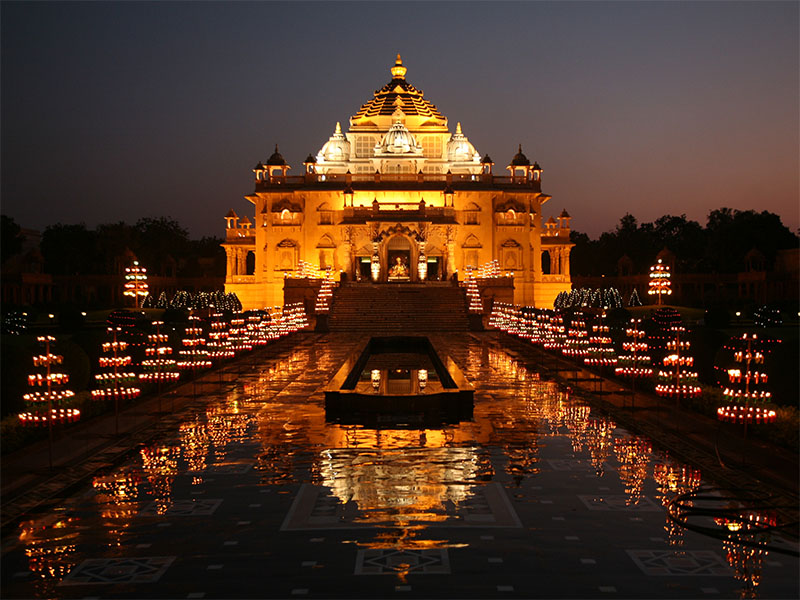
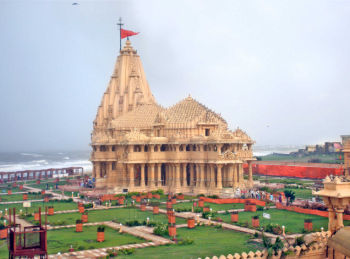
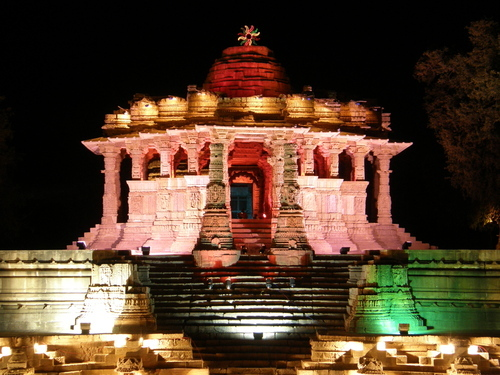

Akshardham at Gandhinagar is one of the largest temples in the Indian state of Gujarat. The temple complex combines devotions, art, architecture, education, exhibitions and research at one place. The monument which is set in a 23-acre plot at Gandhinagar (Gandhinagar district) is built in pink sandstone. It is 108 feet tall and 6000 tonnes of stone has gone into its making. A point worth noting is that this modern monument to Hinduism was built as per the injunctions of Vastu Shastra. Not a bit of steel has been used.
The Someshwar Mahadev temple stands tall among the temples of India. The construction of the present temple in Junagadh district began in 1950. It is the seventh temple built to commemorate the glory of Lord Somnath who was known as BhAiraveshwar in the Sa(ya Yug, Shravanikeshwar in Treta Yug and Shrigaleshwar in DwaparYug.
Constructed in 1026-27 A.D. during the reign of King Bhimdev I of Patan, the temple is dedicated to Surya or the Sun God. Although it bears a dilapidated look, it is still a magnificent specimen of superb artistry of Gujarat's architects of the bygone days. Modhera's sun temple is positioned in such a manner that at the equinoxes the rising sun strikes the images in the sanctuary.
